Fotos de 1971
Fotos de 1971
|
|
|
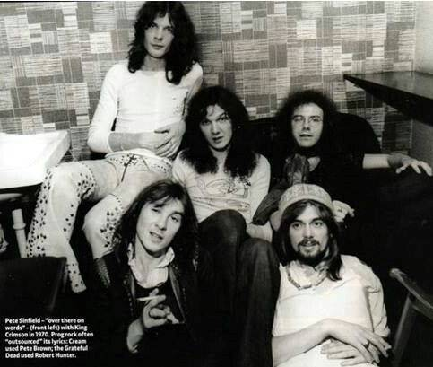 Fotos de 1971/72Abajo x3: Sinfield, Fripp, Collins, Wallace y Burrell en Zoom Club (Francfurt, Alemania), durante la primera presentación de esta formación, en abril del '71. 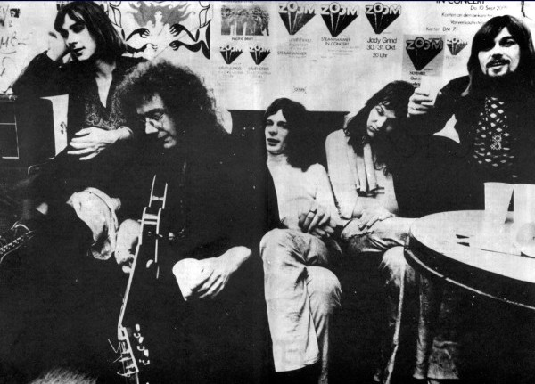 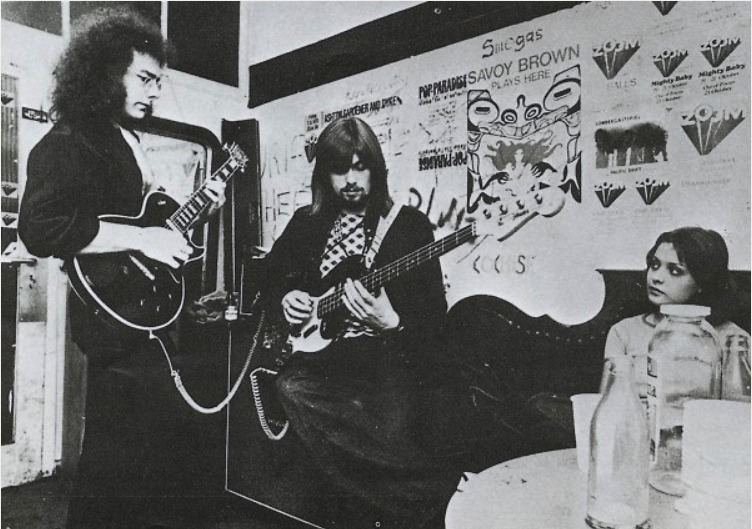 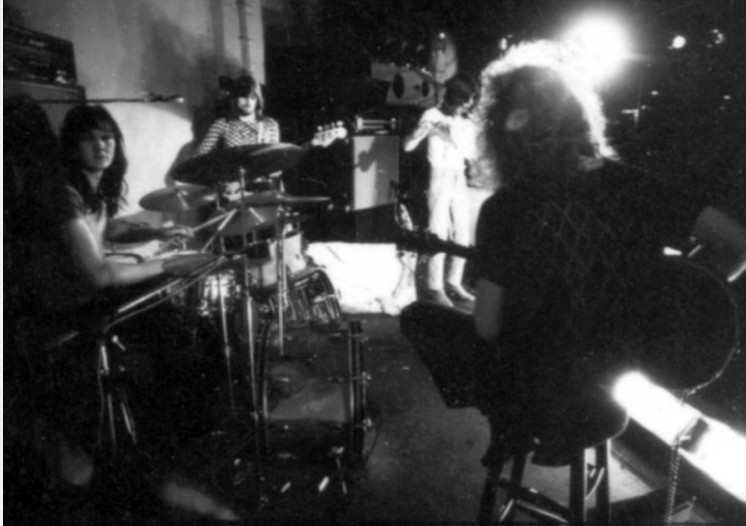 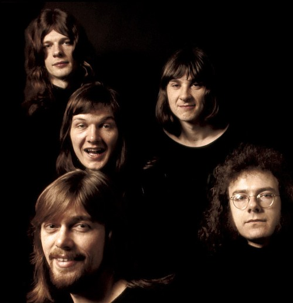 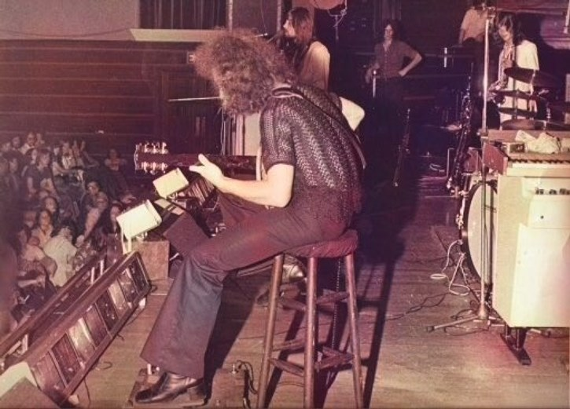 Collins, Burrell, Wallace y Fripp, en vivo en Hyde Park (Londres), 4 de septiembre de 1971.
Arriba a la derecha, Fripp con Robert Wyatt (Soft Machine)
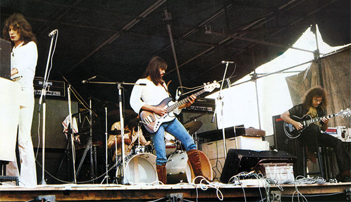
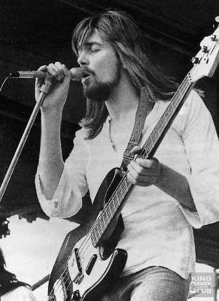 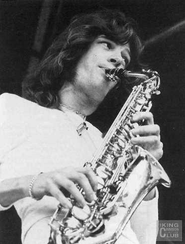
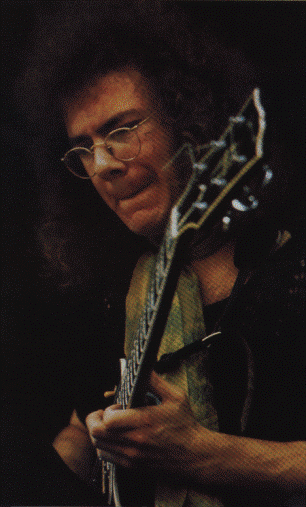 De gira, 1971 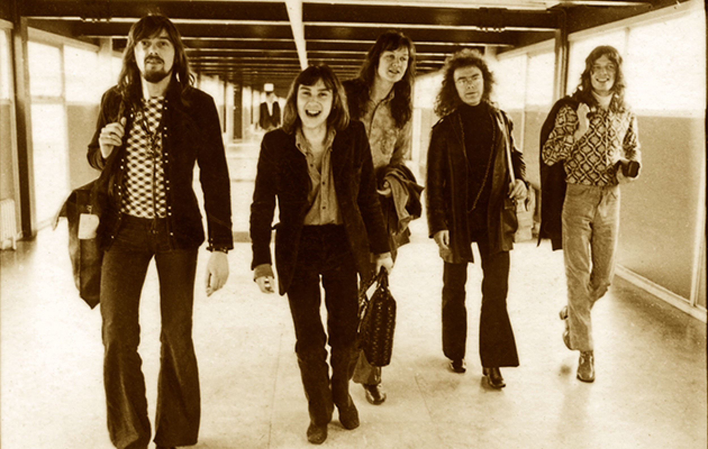 
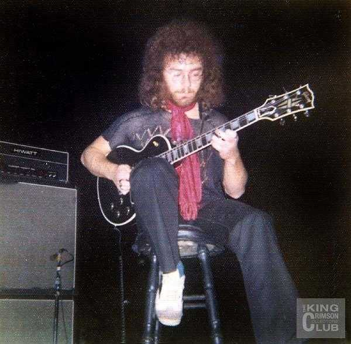 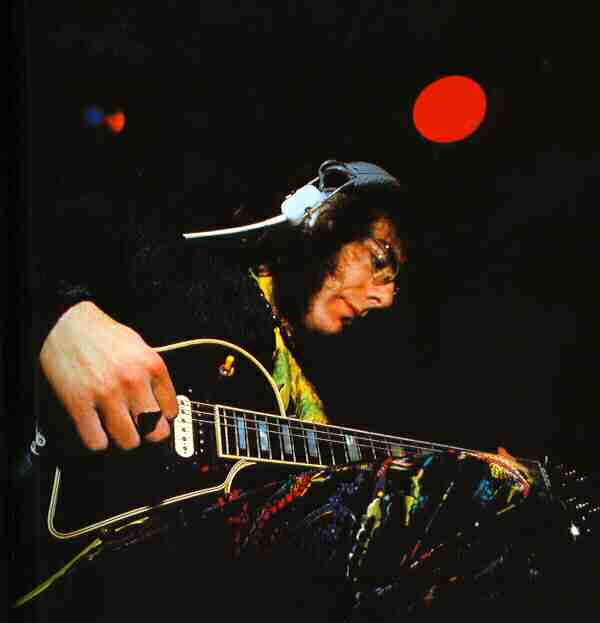 Boston, 27 de marzo de 1972. Uno de los últimos recitales de esta formación, en este caso como soporte de Yes.
En la última de las 4 fotos de arriba (a la derecha), se ve en el escenario la formación clásica de Yes, presentando en gira su disco Fragile; de izquierda a derecha: Howe, Anderson, Bruford, Squire, Wakeman. Bruford quería nuevos horizontes; los compañeros de Fripp ya habían decidido dejar la banda. En bambalinas de este recital, Fripp y Bruford acordaron tocar algo juntos cuando volvieran a Inglaterra. Puede decirse que aquí comienza a gestarse la siguiente encarnación de KC, ya que después de grabar Close to the edge a mediados de año, Bruford dejó Yes y pasó a integrar la nueva banda de Fripp.
|